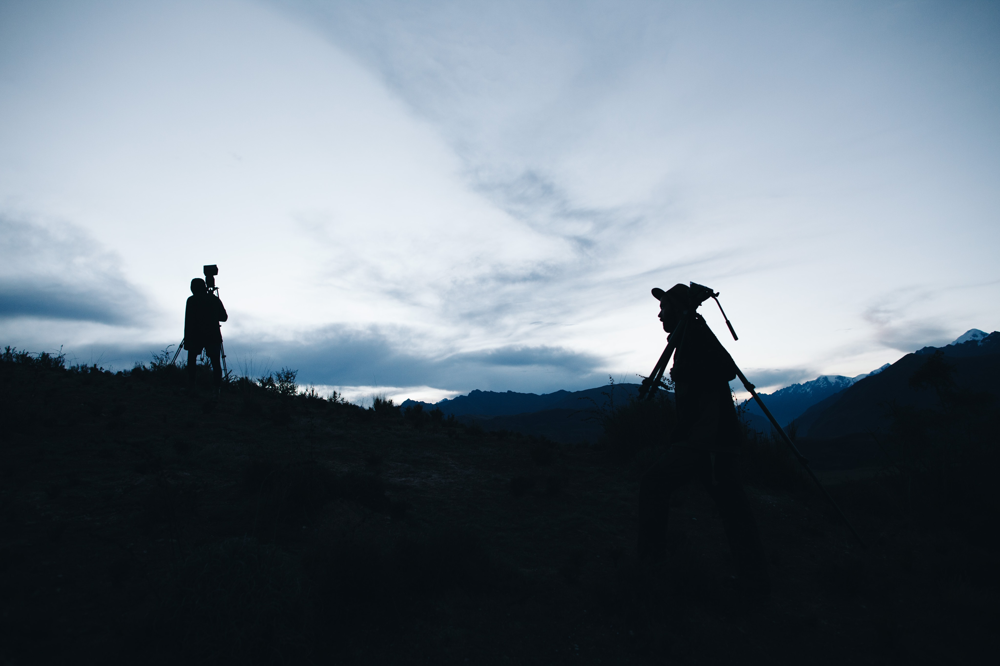

Behind The Scenes

At 3,300 m above sea level, in the Peruvian Andes, indigenous people have been harvesting salt by hand for over 600 years, prior to the Inca times. After many years of struggle and unfair working conditions, the salt workers became owners of the salt mine, creating the comunal company: Marasal. Today they proudly own and operate the salt business. Añay Kachi: The Salt Workers of the Peruvian Andes is a multimedia project that tells the story of the indigenous communities surrounding Maras Salt Pools (Cuzco region).
this project explores the cultural meaning
documenting the daily life of the salt workers.
With the help of Maricarmen Monzilla, our local collaborator and direct contact with the salt mine, Cristobal Ruiz, Thomas Silcock and Toto Thots spent one month in Maras, Peru documenting the daily life of the salt workers.
Through the eyes of Laurita, a 65-year-old indigenous salt worker, this project explores the cultural meaning that this place has for the people of Maras and how it is shaping the future of the next generations.
Añay Kachi: The Salt Workers of the Peruvian Andes includes a 13 minute Short Documentary, Historic Images captured on 35mm and super 8mm film, Sound Recordings and Illustrations that can all be seen through this website.